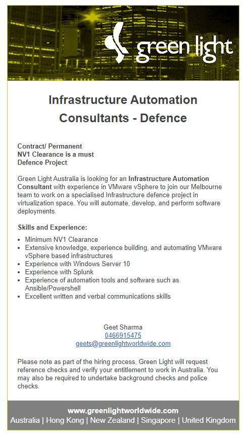

My Ideal Job
Ideal Job
Infrastucture Automation
Consultant - Defence
Job Advertisement
As part of researching for this assignment I found the
role of Infrastructure Automation Consultant for the
Defense department. As Linked Below: Infrastructure
Automation Consultant - Defence 
Job Description
The position of
Infrastructure Automation Consultants for defense would
presumably be based on providing standard infrastructure
automation such as reducing or removing human interaction
with critical IT systems to improve repeatability and
limit human error. Things that currently use IT automation
include cloud computing, system provisioning and
application deployment such as remote loading operating
systems. This would be especially challenging for defense
as they may be using a lot of custom noncommercial
technology and may have additional security and safety
requirements. Working with defense could be very different
from working with normal companies as presumably they have
different priorities around reliability, repeatability and
redundancy. I think working as defense contractor would be
a great opportunity.
Job Required Skills and Experiance
In
addition to the normal IT requirements because this role is
for Defense it also requires a minimum of NV1 (Negative
Vetting 1) defense clearance, if you cannot qualify for NV1
or higher the IT requirements don’t matter. In addition to
requiring NV1, you need experience working with VMware
(Virtual machines) as well as experience with Windows Server
10 & PowerShell which are both Microsoft applications.
Lastly, they are also looking for someone with experience in
Splunk. According to the Splunk website it is a big data
infrastructure security system that gives you insights into
operational performance.
Job My Skills and Experiance
I currently
have very few skills for this job, I have a basic grounding in
the windows server platform from previous training on Server
2008 and Server 2012. I have a basic understanding of
PowerShell based on work I have done previously but very
limited practical experience with Windows 10. I would need to
upskill significantly to get back to an productive level in
both Windows Serve & PowerShell. I have had extensive training
and practice using VMWare as part of learning to install and
implement Cisco Prime and other networking devices such as
radius servers which are commonly are installed on VM’s to
avoid needing multiple physical devices. I have no experience
with Splunk and would need training in that. Importantly
however I have a current NV1 clearance so that is one major
hurdle already take care of.Job My Plan to get the Skills and Experiance
TBA TBA TTBA
Seting up a Rasberry Pi to allow for remote control my the 3D Printer over Wifi